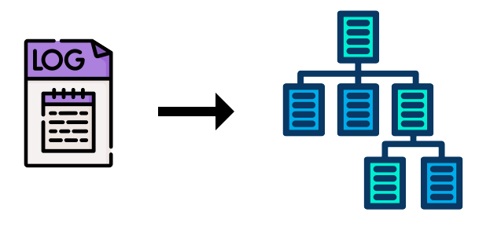
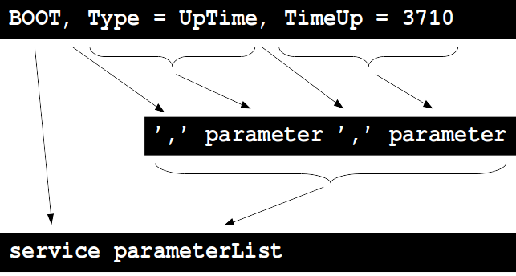
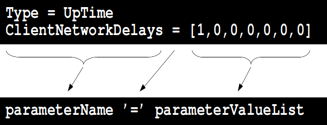

A simple tailor-made log analyzer
Pascal Bodin
Document history
| When | What |
|---|---|
| 21-Feb-2021 | Figure on first page |
| 20-Feb-2021 | Version 1.0 |
License

This work is licensed under a Creative Commons Attribution-NonCommercial-ShareAlike 4.0 International License
Credits
- reveal.js - Copyright (C) 2021 Hakim El Hattab
- Kiranshastry from www.flaticon.com
- Freepik from www.flaticon.com
- Matomo
Contents
Foreword
Who am I?
-
half-time independent consultant - connected devices


- half-time senior software engineer
 - appointed Orange Expert
- appointed Orange Expert
- First connected devices project in 1990
More information
Requirements
- Functional requirements:
- Analyze a specific type of log messages
- Non-functional requirements:
- Must run in a constrained environment (little RAM, little disk space)
Message format
The only specification:
Y/M/D–H/MN.S, service,
parameter1 = [value1, value2],
parameterN = parameterN value,
...
Example
2020/11/30-07:51:38, BOOT, Type = UpTime, TimeUp = 3710
2020/11/30-07:51:38, MEMINFO, MemTotal = 95919,
MemFree = 59158, Buffers = 3787, Cached = 10252
2020/11/30-07:51:38, SENSORS, Fan_HDD = 0
2020/11/30-07:50:28, NETWORK, Type = NetworkDelay,
ClientNetworkDelays = [1,0,0,0,0,0,0,0,0,0,0,0],
MeanClientNetworkDelay = 0.000000e+00
For simplification, let's ignore timestamp in what follows.
It's easy to extract it:
- Start of line
- Fixed format
Adding our requirements
- As format is not described in a formal way:
- Should be easy to adapt the analyzer
- New types of messages may appear:
- Should be easy to adapt the analyzer (bis)
- Embedded software:
- must use little RAM
- must be reliable
Message structure - low level
NETWORK, Type = NetworkDelay,
ClientNetworkDelays = [1,0,0,0,0,0,0,0,0,0,0,0],
MeanClientNetworkDelay = 0.000000e+00
Different elements:
- Specific characters:
,=[] - Strings
Remember: we consider that timestamps are no more present.
Sentences
- These elements are combined according to some rules
- These rules: syntax
Rules
How to describe all possible messages?
Let's try with a sample message:

Rule 1
message = service parameterList
Let's go on
Rule 2
parameterList = (',' parameter)+
Notation:
(and)=> to group elements+=> element repeated one or more times
Let's go on
Rule 3
parameter = parameterName '=' parameterValueList
Rules 4 and 5
parameterValueList = value | '[' valueList ']'
valueList = value ( ',' value)+
Notation:
|=> alternative
The whole set of rules
message = service parameterList
parameterList = (',' parameter)+
parameter = parameterName '=' parameterValueList
parameterValueList = value | '[' valueList ']'
valueList = value ( ',' value)+
service = STRING
parameterName = STRING
value = STRING
Generalization
- terminals: elements that can't be transformed according to previous rules
- non terminals: elements that can be transformed
- productions: rules
- start symbol: the non terminal that denotes our language (
message) - grammar: the set of the above four types of items
- language: all the sentences that can be produced with the grammar
- EBNF (Extended Backus Naur Form): the metasyntax we used to express the productions
Implementation
- First step: lexical analysis
- transforms a message into a list of tokens (elements): specific characters and strings
- for our simple example: a finite-state machine
For the sake of simplification, space and tab characters processing is omitted.
- Second step: syntactic analysis (parsing)
- checks that the list of tokens is a sentence of the language
- builds a data structure containing a usable representation of the sentence
- For our simple grammar, we can use top-down parsing
- A function is created for each non terminal
- Each function calls other function(s) and/or processes token(s)
void parse_message() {
get_service();
get_parameter_list();
}
void get_service() {
token_t token = get_token();
add_service_data(token);
}
void get_parameter_list() {
while(true) {
get_comma();
get_parameter();
if (!next_is_comma()) {
break;
}
}
}
Etc.
Error processing
error_t parse_message() {
rs = get_service();
if (rs != SUCCESS) return rs;
rs = get_parameter_list();
return rs;
}
error_t get_service() {
token_t token = get_token();
if (token.type != string_token) {
return WRONG_TOKEN_TYPE;
}
return add_service_data(token);
}
error_t get_parameter_list() {
while(true) {
rs = get_comma();
if (rs != SUCCESS) return rs;
rs = get_parameter();
if (rs != SUCCESS) return rs;
if (!next_is_comma()) {
break;
}
}
return SUCCESS;
}
More has to be done for error processing:
- Keep position in line with each token
- On error, display position, value and reason
- Do not crash 😀
Conclusion
- Resulting code (in C) is short:
- Lexical analyzer: 285 lines, including declarations
- Parser: 485 lines, including declarations
- Really easy to adapt to a modification of the message format (this happened 😀)
- Reliable code
- For a more complex grammar, a parser generator (see References) could have been used
But:
- Some prior experience is required (typically: to ensure the grammar allows for easy parsing)
- Or reading some material about parsing (see References)
References
- Compilers: Principles, Techniques, and Tools - Aho, Ullman, Lam, Sethi (The Dragon Book)
- Standford University course CS143
- Lex and Yacc - original Unix tools, to generate lexical analyzers and parsers
- Bison - parser generator, upward compatible with Yacc